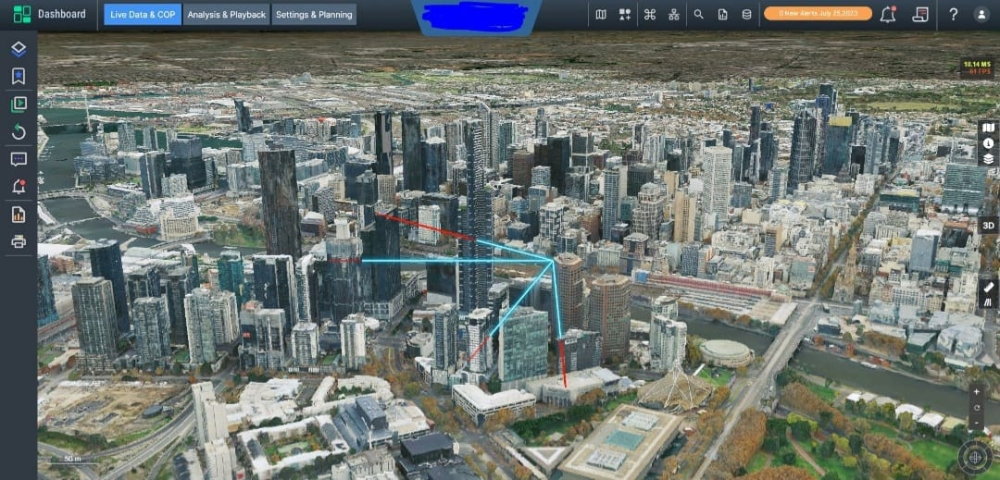
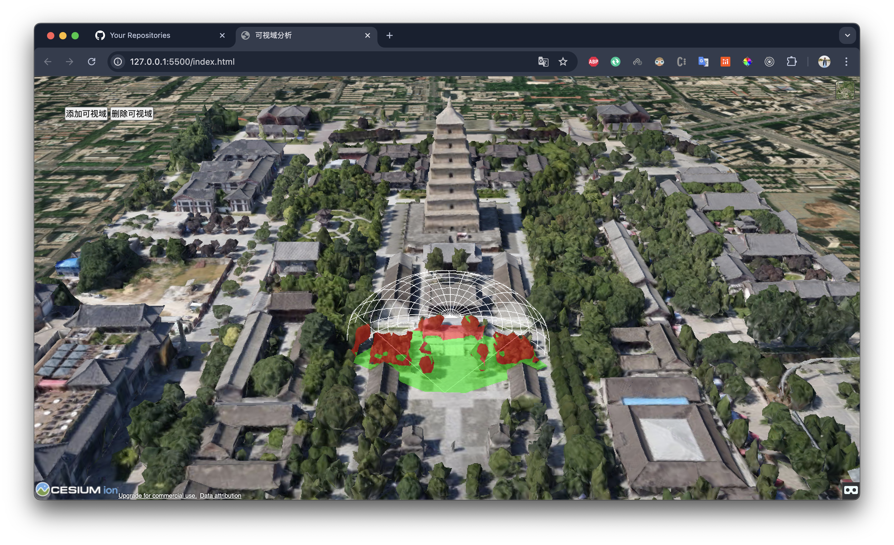
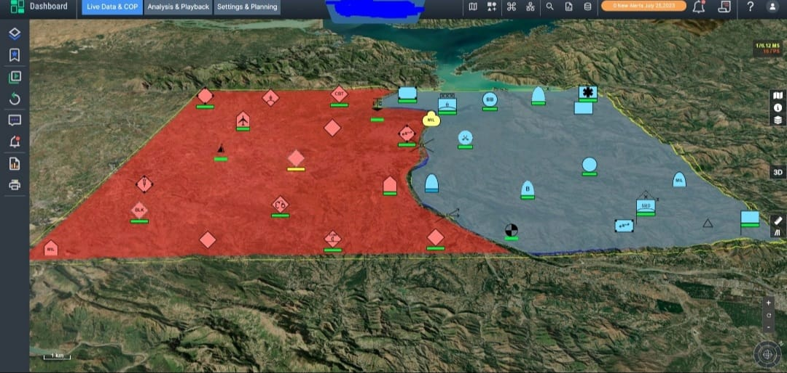
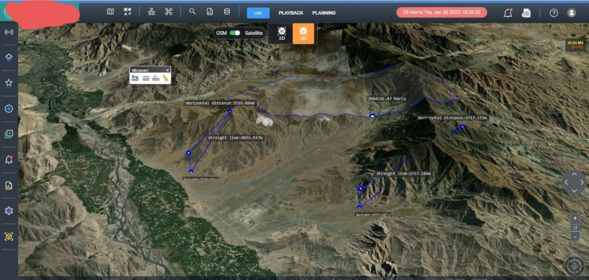
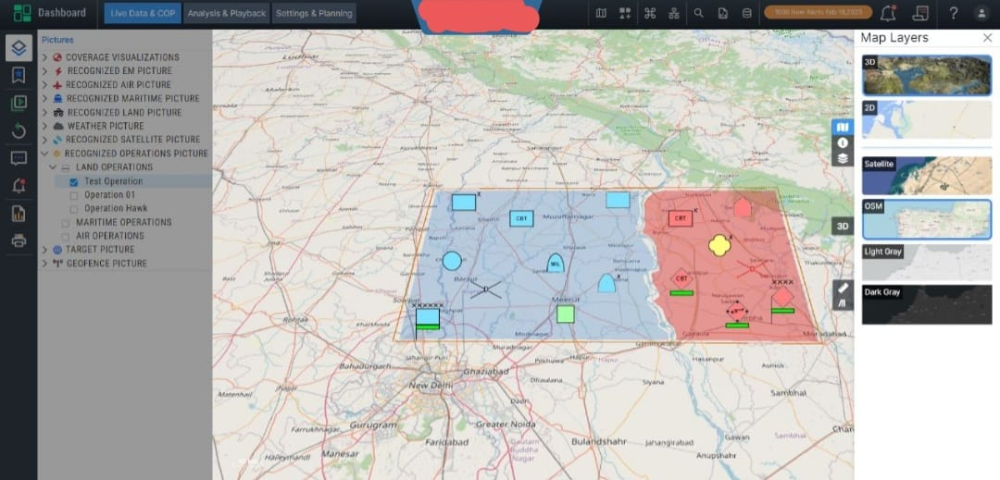
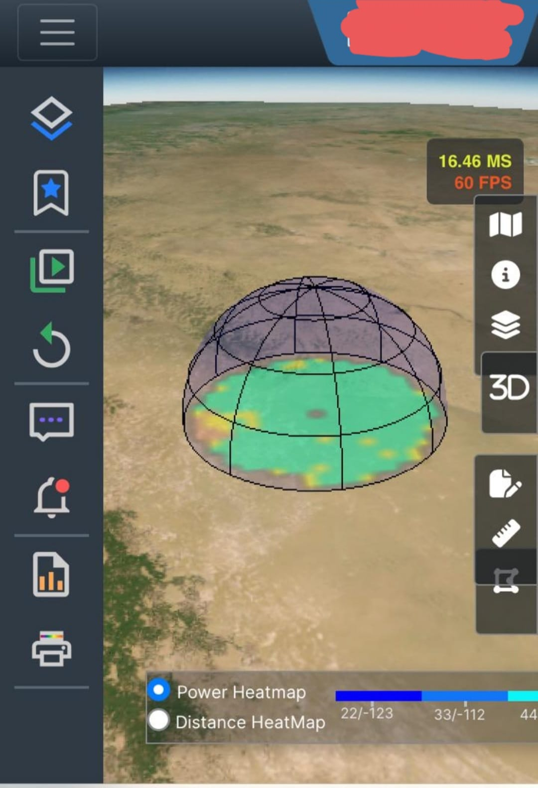

The Concept
A real-time geospatial intelligence platform integrating sensor networks, radar systems, geofencing, and field data to provide unified tactical situational awareness for mission-critical operations and strategic planning.
Key Features
- Real-Time Sensor Integration: Aggregates data from multiple sensor networks including ground-based, aerial, and remote sensing systems into a unified dashboard for tracking movements and monitoring critical zones.
- Advanced Radar Visualization: Displays radar data on interactive 3D maps for rapid target identification and tracking across the operational theater.
- Dynamic Geofencing: Create and manage strategic zones with automatic alerts when entities enter or exit designated areas.
- Battle Planning Tools: Design operational strategies, plot routes, and coordinate multi-unit movements with real-time collaborative updates.
- Threat Assessment: Automated pattern detection, movement prediction, and alert generation with historical playback capabilities.
- Secure Communication: Encrypted channels with role-based access controls and comprehensive audit logging.





Technology Stack
- 3D Visualization: CesiumJS for high-performance 3D globe rendering, terrain visualization, and real-time entity tracking.
- Frontend: React with modern hooks for responsive UI and smooth performance with thousands of real-time entities.
- Backend: Django with Django Channels for WebSocket-based real-time communication and sub-second data updates.
- Database: PostgreSQL with PostGIS for spatial data storage and Redis for caching and session management.
- Deployment: Docker containerization for scalable deployment and easy maintenance.
Impact
This system enables faster tactical decision-making through real-time data integration and intuitive 3D visualization. Built with CesiumJS, React, and Django with WebSockets, it demonstrates expertise in mission-critical geospatial systems that handle real-time data at scale while meeting stringent performance and security requirements.
Due to the sensitive nature of this project, access is restricted. For more information or to discuss similar capabilities, please contact me directly.